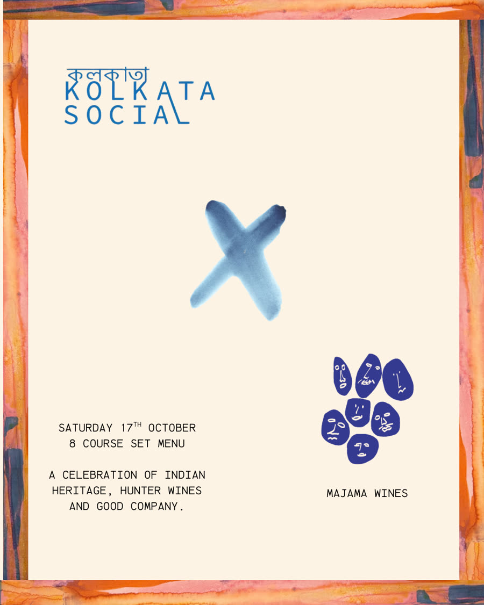

(2).png)

Saturday 17 October
Majama Wines at
Kolkata Social.
An 8-course special dinner to celebrate Durga Pujo. We're bringing together a set menu inspired by the flavours, rituals and memories that make pujo special. Pairing the menu is a selection of wines from @majama_wines.
Roger will be at Kolkata Social on the night, pouring their delicious drops and talking about the stories and processes behind them.
Reserve →